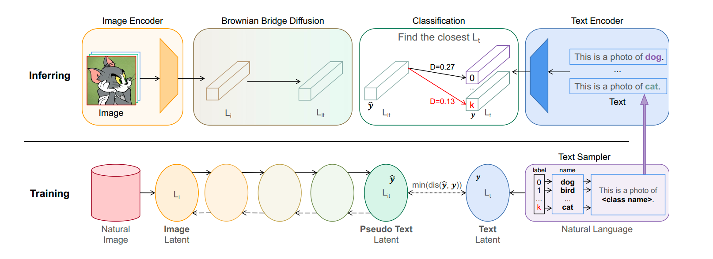

ITCD: Image to Text Classification
Publication · ESGMFM '24, ACM · with Yanxiang Ma
A diffusion model that maps image embeddings into a text latent space, then classifies by L1 distance — with a training-free OOD detector on top.

The problem
Most image classifiers learn a visual encoder and a linear head in the same label space. ITCD (Image to Text Translation for Classification by Diffusion Models) treats the same task as translation: move an image embedding into a text latent space, then pick the class whose text embedding is closest. The bet is that a frozen language encoder already organizes class names usefully, so the hard part is the mapping, not another fully trained head.
That setup also gives a natural handle on out-of-distribution inputs. If an image does not land near any class embedding, it is not just “a low-confidence cat”; it is off the manifold the model translated onto. The paper appeared at ESGMFM '24 (ACM, pp. 7–11), with Yanxiang Ma. DOI: 10.1145/3688864.3689148.
Architecture
The image encoder is a frozen ViT-B/16. The text encoder is a frozen BERT-small. Neither is updated during training; they provide the two latent spaces. A Brownian Bridge Diffusion model is what actually moves image embeddings toward the text space. A Brownian bridge is a stochastic process pinned at two endpoints, which fits this problem: we know where the image embedding starts and where class text embeddings live, and we want a translation between them rather than unconstrained generation.
Classification does not use a learned linear layer on top of the translated embedding. It uses L1 distance to class embeddings in the text latent space. That keeps the decision rule aligned with the space we translated into, and it is the same distance we later reuse for OOD detection instead of training a separate rejection head.
Fast inference and OOD
Diffusion at inference is usually expensive. We used one-step DDIM sampling, which brought runtime down to about 0.7 ms per image — fast enough that the diffusion translation is not a toy extra cost on top of ViT. The model still has to land close enough to the right class embedding in that single step; the training objective is what makes one-step sampling viable rather than a quality cliff.
On top of the same L1 distances I designed a training-free, distance-based top-k OOD detector. If none of the nearest class embeddings are close enough, the input is flagged as out-of-distribution. There is no extra OOD training set and no extra network. CIFAR-10 vs. CIFAR-100 is a strict version of that test: the images are natural and similar, but the label sets differ, so a detector has to reject the other dataset rather than only spotting noise or cartoons.
Results & stack
CIFAR-10 accuracy 94.1%. CIFAR-100 accuracy 80.5%. CIFAR-10 vs. CIFAR-100 OOD detection reached 99.99% F1 and 99.99% AUC-ROC. Inference is about 0.7 ms per image with one-step DDIM. The classification rule and the OOD rule share the same translated text space and the same L1 distances.
Python · PyTorch · ViT-B/16 · BERT-small · Brownian Bridge Diffusion · DDIM